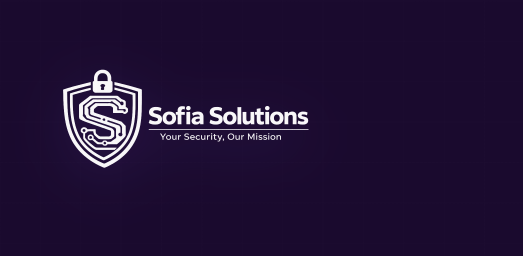

Sofia Solutions
SECURITY & SOC FRAMEWORK
Defensa de Proyecto Final | ASIX Ciberseguridad 2026
El Escenario Actual
En un entorno corporativo hiperconectado, las vulnerabilidades web (OWASP Top 10) siguen siendo la principal puerta de entrada para los atacantes.
- Falta de visibilidad en tiempo real (Shadow IT).
- Configuraciones por defecto en bases de datos.
- Ausencia de respuesta automática ante incidentes.
Sofia Solutions nace para cerrar esta brecha mediante un ecosistema unificado.
Objetivos Estratégicos
Demostración Ofensiva
Exponer de forma controlada cómo se explotan fallos de SQLi y XSS en arquitecturas legacy.
Arquitectura Resiliente
Implementar capas de WAF, Rate Limiting y Cifrado avanzado (Bcrypt).
Monitorización SOC
Centralizar telemetría técnica y geográfica para una respuesta rápida.
Automatización
Integrar n8n para orquestar alertas críticas vía Webhooks.
Stack Tecnológico
Node.js v20
Express API
PHP 8.2
Apache Server
PostgreSQL 15
Prisma ORM
Docker &
Compose
Grafana
Observability
n8n
Workflow
Automation
Arquitectura de Red
Orquestación de 7 contenedores en una red aislada.
FASE I: Auditoría Ofensiva
La Consola de Auditoría
Un entorno controlado para demostrar debilidades.
- Modo Vulnerable: Desactiva Bcrypt y WAF para demostraciones educativas.
- Targeting: Ataques directos contra la Plataforma Corporativa.
Ataque: SQL Injection
Concepto
Explotación de la falta de sanitización en el query de autenticación.
SELECT * FROM users WHERE
email = '' OR 1=1 --' AND password = '...'Resultado: Acceso administrativo sin credenciales válidas.
XSS & Session Hijacking
Robo de cookies de sesión mediante inyección de scripts.
Simulador de Burp Suite integrado: Permite interceptar la cookie y modificar el rol del usuario a 'ADMIN' en tiempo real.
FASE II: Arquitectura Defensiva
El Escudo de Sofia Solutions
Activación del "Modo Seguro" mediante scripts automatizados.
Protección de Datos: Bcrypt
Bcrypt implementa un coste computacional (Work Factor) que protege contra fuerza bruta.
Incluso si la base de datos es exfiltrada, las contraseñas son computacionalmente imposibles de revertir.
WAF & Prevención de Abuso
Rate Limiting
Bloqueo automático de IPs tras detectar múltiples intentos fallidos o ráfagas sospechosas.
429 Too Many RequestsWAF Filtering
Inspección de payloads buscando patrones de inyección (RegEx avanzado).
403 ForbiddenFASE III: Monitorización SOC
Observabilidad total mediante el Panel Administrativo y Grafana.
0
Vulnerabilidades Abiertas
100%
Uptime Servicios
Rastreo Geográfico (Threat Intel)
¿Desde dónde nos atacan?
El Panel SOC enriquece cada log de ataque con la IP de origen y su ubicación geográfica, permitiendo identificar campañas dirigidas.
Orquestación de Respuesta: n8n
Lógica del Workflow
- Recepción de Webhook desde el Backend.
- Clasificación de severidad (LOW, HIGH, SOS).
- Enriquecimiento de datos técnicos.
- Notificación inmediata vía Email/Slack.
El Correo de Alerta SOC
Notificaciones diseñadas para la toma de decisiones.
Diseño minimalista premium enfocado en datos críticos: IP, Cliente, Gravedad.
Ciclo de Vida del Proyecto
Análisis OWASP: Identificación de vectores de ataque críticos en aplicaciones PHP/Node.
Containerización Docker: Creación de un entorno reproducible y escalable.
Desarrollo Full-Stack: Implementación de lógica segura y telemetría.
Integración SOC: Unión de Grafana, Prometheus y n8n.
Sofia Kit Auditor (Python)
Persistencia y Post-Explotación.
# sofia-audit-framework.py
def exfiltrate_data():
# Automatización de volcado de DB post-compromiso
# Simulación de persistencia silenciosaHerramienta para demostrar el impacto real tras un acceso inicial exitoso.
Conclusiones
- La Defensa en Profundidad es la única estrategia válida.
- La monitorización sin automatización es insuficiente en el panorama actual.
- Sofia Solutions demuestra que herramientas Open Source pueden rivalizar con soluciones Enterprise si se integran correctamente.
SISTEMA VALIDADO PARA DEFENSA
¿Preguntas?
SOFIA SOLUTIONS SOC
Autor: ewsophie333
Proyecto Final ASIX / Ciberseguridad